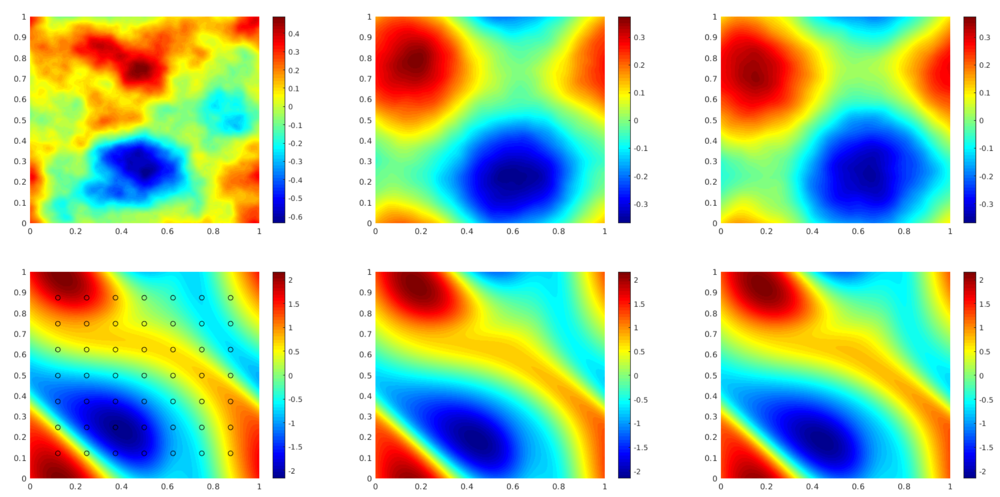
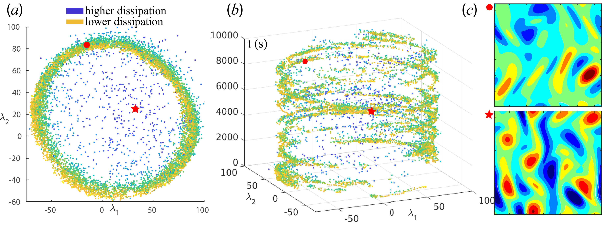

Neural Operator
Machine learning for scientific computing

Problems in science and engineering involve solving partial differential equations (PDE) systems. Sometimes, these PDEs are very hard. It could take traditional PDE solvers days and months to simulate some 3D fluid dynamics. Data-driven, learning-based methods have the promises to solve these problems faster and more accurate. The classical development of neural networks has primarily focused on learning mappings between finite dimensional Euclidean spaces or finite sets. To better approximate the solution operators raised in PDEs, we propose a generalization of neural networks to learn operators mapping between infinite dimensional function spaces. We formulate the approximation of operators by composition of a class of linear integral operators and nonlinear activation functions, so that the composed operator can approximate complex nonlinear operators. Such neural operators are resolution-invariant, and consequently more efficient compared to traditional neural networks. Especially, the Fourier neural operator model has shown state-of-the-art performance with 1000x speedup in learning turbulent Navier-Stokes equation, as well as promising applications in weather forecast and CO2 migration, as shown in the figure above.
Related works
Models and architectures: [Physics-informed neural operator], [Fourier neural operator], [FNO-Transformer], [Model Reduction (PCA)], [Graph neural operator], [Mutlipole graph neural operator], [Multi-Wavelet neural operator (Gupta et. al.)], [Galerkin transformer (Cao)]Applications: [Weather Forecast], [Cryo-EM / SARS-CoV-2], [CO2 migration], [Crystal plasticity], [Seismic wave], [Kolmogorov flow], [Stochastic flow (Salvi et. al.)], [Coastal floods (Jiang et. al.)], [Wave equation (Guan et. al.)], [PDE control (Hwang et. al.)], [Composites curing (Chen et. al.)].
Approximation theory: [Neural operator], [Fourier neural operator]
Resources
Blog posts: [Fourier neural operator], [Graph neural operator]Code: [Fourier neural operator], [Physics-informed neural operator], [Graph neural operator], [Fourier neural operator (Julia)] [Clima]
Media coverage: [GTC Keynote], [Nvidia (Weather model)], [Newswise (Covid)], [MIT Tech Review], [Quanta Magezine], [Towards Data Science], [Medium]
Talks/Videos: [Simons Foundation], [U Washington], [U Toronto], [CMU]
Model

Results of neural operators
1. Supervised Learning
We consider the 2-d Navier-Stokes equation for a viscous, incompressible fluid in vorticity form on the unit torus. In this experiment, we use neural operators to learn the operator mapping from the vorticity of the first time 10 time steps to that up to a later time step.

FNO achieves better accuracy compared to CNN-based methods.
Further, it is capable of the zero-shot super-resolution.
It is trained on 64x64x20 resolution and evaluated on 256x256x80 resolution, in both space and time.
2. Inverse Problem
We use a function space Markov chain Monte Carlo (MCMC) method to draw samples from the posterior distribution of the initial vorticity in Navier-Stokes given sparse, noisy observations at a later time step.

We generate 25,000 samples from the posterior (with a 5,000 sample burn-in period),
requiring 30,000 evaluations of the forward operator. In sharp contrast, FNO takes 0.005s to evaluate a single instance while the traditional solver, after
being optimized to use the largest possible internal time-step which does not lead to blow-up, takes
2.2s.
3. Physics-Informed Neural Operator
When the equation is available, we can use the physics-informed loss to solve the equation.

We propose the pre-train and test-time optimize scheme. During pre-train, we learn an operator from data.
During the test-time optimization, we solve the equation using PINN loss.
4. Chaotic System
The Kolmogorov Flow is a chaotic system, which is intrinsically instable. Smaller errors will accumulate and make the simulation diverge from the truth.

We take a new perspective:
we predict long-time trajectories that, while eventually diverging from the truth,
still preserve the same orbit (attractor) of the system and its statistical properties.
5. FNO Transformer
Vision transformers have delivered tremendous success in representation learning. We propose Adaptive Fourier Neural Operator (AFNO) as an efficient token mixer that learns to mix in the Fourier domain.